2つ目の行列からのカラーマップ
3D-Colormap-Other-Mat
サマリー
Originは4次のデータを、2つ目の行列をカラーマップとして、曲面図に表すことができます。
- 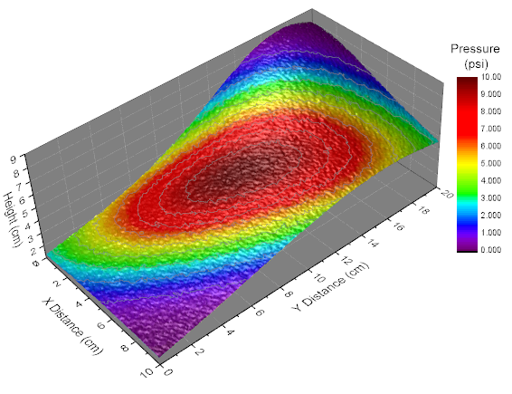
必要なOriginのバージョン: Origin 2015 SR0以降
学習する項目
- 行列から色付き曲面図を作成する
- 2つ目の行列を使って曲面図をカラーマップする
- カラーマップのレベルとパレットを編集する
- グラフのライティングをコントロールする (Origin 9 SR0より)
ステップ
このチュートリアルは、チュートリアルデータプロジェクト<Origin EXE フォルダ>\Samples\TutorialData.opjと関連しています。
- チュートリアルデータプロジェクトを開き、プロジェクトエクスプローラで、Surface with
Colormap from Another Matrixフォルダを開きます。
- 行列MBook1D をアクティブにして、タイトルバーの間に2つのイメージサムネールが表示されます。イメージサムネールが表示されない場合、行列ブックのタイトルバーを右クリックしてコンテキストメニューからイメージサムネールの表示を選びます。イメージサムネールHightを選択します。
- メニューから作図：3D：3Dカラーマップ曲面と選択して、曲面を塗るをクリックしてグラフを作成します。
- 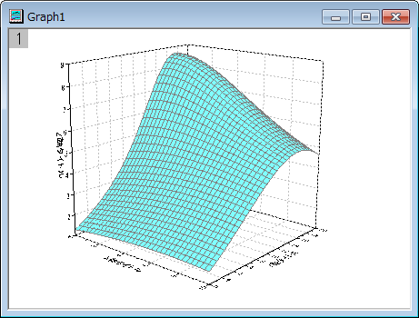
- グラフをダブルクリックして、作図の詳細ダイアログを開きます。左側パネルで、(MBook1D)MSheet1を選択します。
右側パネルで、塗りつぶしタブを選択します。 行列から等高線を塗りつぶすを選択し、ドロップダウンリストからMat(2)を選びます。
- 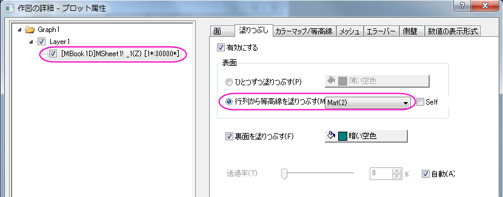
- カラーマップ/等高線タブで、レベルヘッダをクリックして、レベルの設定ダイアログを開きます。ダイアログ内で最小/最大の検索をクリックして、主レベル数と副レベル数をそれぞれ10と9に設定します。OKボタンをクリックしてダイアログを閉じます。
- 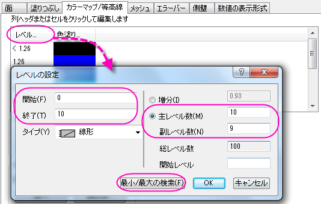
- 色塗りヘッダをクリックして塗り方ダイアログを開きます。パレットをロードを選択し、パレット選択をクリックしてRainbowパレットを選びます。OKボタンをクリックしてダイアログを閉じます。
- 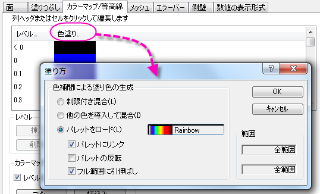
- 等高線図を有効にするをチェックします。それから、線ヘッダをクリックし、等高線ダイアログを開きます。このダイアログでは、主レベル上のみ表示にチェックを付け、次の図のように線を設定します。OKボタンをクリックして、ダイアログを閉じます。
- 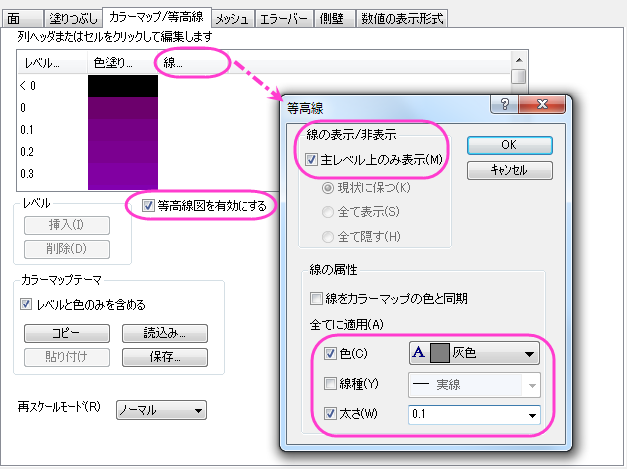
- メッシュタブを開き、有効にするチェックを外してメッシュ線を非表示にします。
- 左側パネルでLayer1を選択して、右側パネルでライトタブを開きます。モードの下にある方向性を選択します。水平と垂直をそれぞれ124と40に設定し、光の色グループ内の拡散で「明るい灰色」を、鏡面では灰色を選びます。輝きを37にセットします。
- 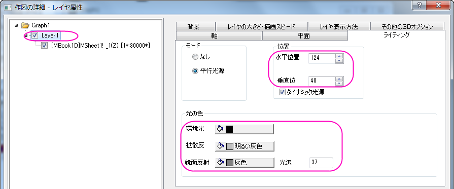
- 平面タブを開き、色を灰色に設定します。そして、立方体のドロップダウンメニューから正面角選びます。
- 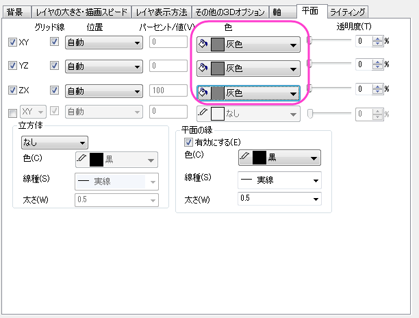
- 軸タブに行き、以下のように設定します。OKボタンをクリックして、ダイアログを閉じます。
- 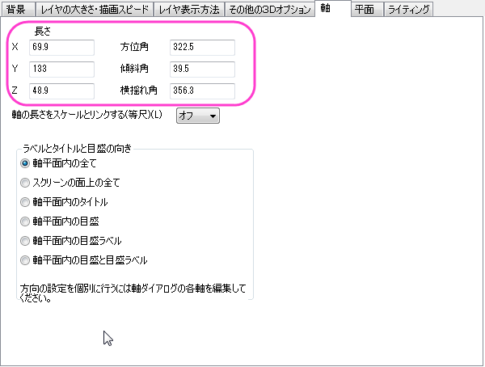
- グラフウィンドウをアクティブにして メニューから挿入：新規の色スケールと選択して色スケールを追加します。
- 色スケールをダブルクリックし、色スケール制御ダイアログを開きます。 左側パネルでレイアウトを選択し、色スケールの幅を150に設定して逆順にチェックを付けます。
- 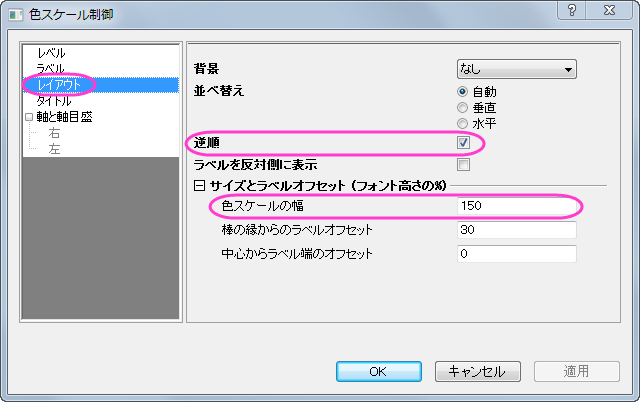
- 左側パネルでラベルを選択し、フォントサイズを以下のように14に設定します。
- 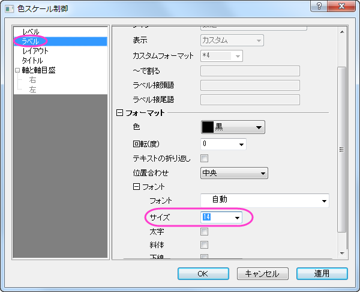
- OKをクリックして、色スケール制御ダイアログボックスを閉じます。
- X、Y、Zの軸をダブルクリックしてタイトルにぞれぞれ「X distance」、「Y distance」、「Height」を入力します。テキストオブジェクトで「Pressure(psi)」をカラースケールの上にいれます。
- 最終的なグラフは次のようになります。